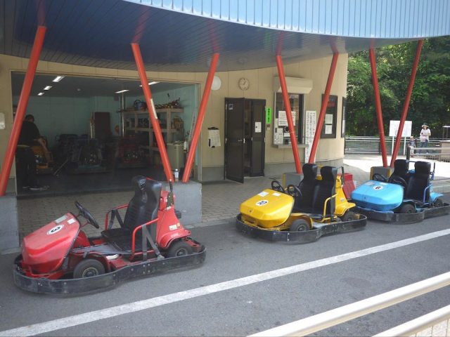
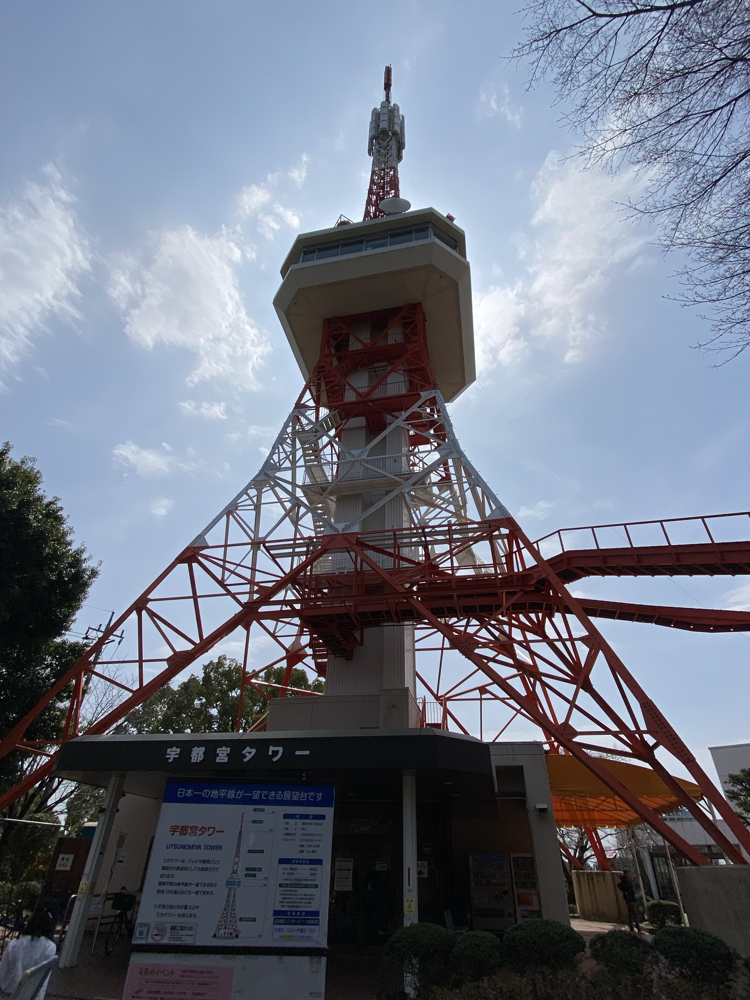
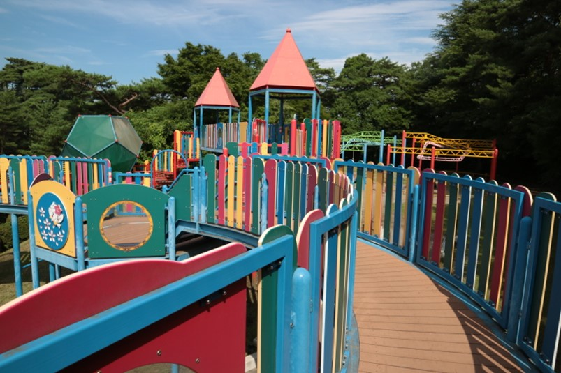

park
休園日
月曜日（月曜日が祝日の場合翌日）年末年始（12月29日から1月3日） 4月1日(市民の日) 5月5日(子どもの日) 6月15日(県民の日) 11月23日(勤労感謝の日)
ゴーカート

営業時間：am 9:00~pm 16:00
休園日：土曜日(月曜日が祝日の場合火曜),年末年始(12月29日～1月3日)
対象：3歳～中学3年生
※身長140cm未満と
3歳～小学2年生は保護者同伴でお願いいたします。
使用料
- 普通券 1周：140円
- 5枚券 5周 回数券：650円
- 11枚券 11周回数券：1,400円
- ※障がい者とその介護者1名の料金は全額免除 （障がい者手帳必須）
無料日：毎週土曜日※1人5周まで
宇都宮タワー(展望台)

営業時間：am 9:00~pm 16:30
使用料
- 普通券 1周：140円
- 5枚券 5周 回数券：650円
- 11枚券 11周回数券：1,400円
- ※障がい者とその介護者1名の料金は全額免除
（障がい者手帳必須）
その他

アドベンチャーＵ
さまざまな遊具や最長58mのすべり台、
ゴーカートもこちらにあります。
アドベンチャーブリッジ
橋長：152m（支間長 150m）
高さ：約30m
動物舎
ポニー ウサギ モルモット ツル クジャク 水鳥など
他の動物たちもいます！
餌やりや乗馬体験もできます。